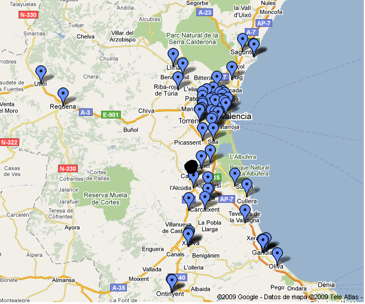
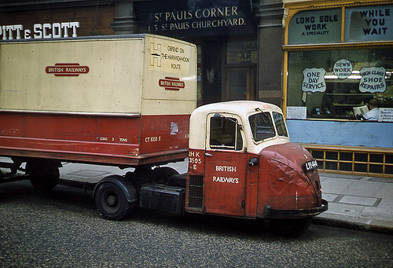
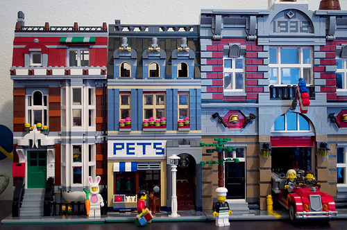

Towards a Multiobjective Evolutionary Approach to Inventory and Routing Management in a Retail Chain
A. I. Esparcia, A. Martínez-García, P. García-Sánchez, J. J. Merelo, A. M. Mora

Let's start the trip
Inventory Costs
Transport Costs
Multiobjective

10 simulated +
1 real shop
using NSGA2
The chromosome represents admissible patterns per shop
From those patterns, the capacitated version of the VRP is solved using Clark and Wrigh algorithm + local search
Experiments with simulated data; selection of instances
- Size
- Distribution
- Eccentricity
Results with simulated data: cost and time


Results with simulated data: inventory and transport